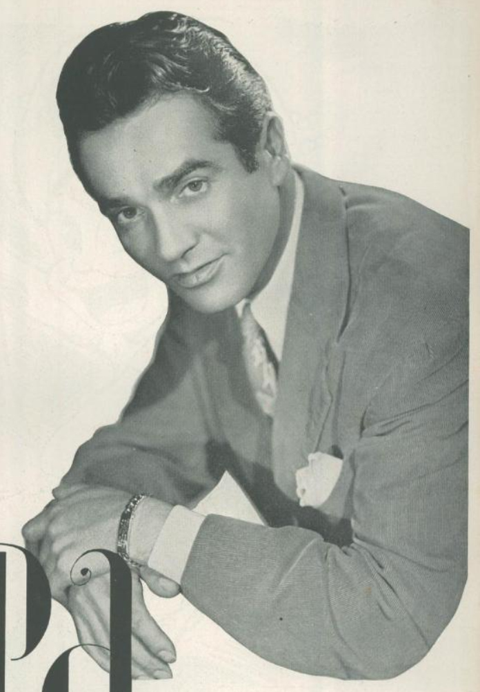
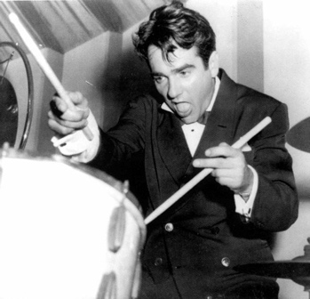

Gene Krupa was a Jazz drummer most known for his work with Benny Goodman. His stellar drumwork for the song "Sing, Sing, Sing" (linked below) more or less invented the drum solo. His energetic style redefined what drums were able to do in Jazz and subsequent derivative genres.
 He is considered the "founding father of the modern drumset", having studied many of Africa's traditional instruments in order to assemble the toolkit that drummers have used ever since.